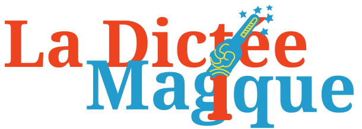
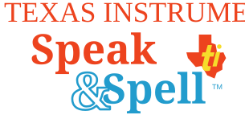

La voix, les touches, les souvenirs. À toi de jouer.


TEXAS INSTRUMENTS · LA DICTÉE MAGIQUE
UNE PETITE CAPSULE TEMPORELLE
Une machine. Des centaines de souvenirs.
Une réplique non officielle du modèle français de 1981, redessinée pour le web. Son programme original est exécuté par MAME, avec la voix d’époque ou une voix moderne au choix. Code original sous licence MIT ; ROM non fournie. Sans compte ni suivi.
Texas Instruments et Speak & Spell sont des marques de leurs propriétaires. Projet indépendant, sans affiliation. Le moteur MAME signale une émulation sonore imparfaite.